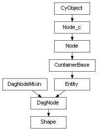

class cymel.core.cyobjects.shape.Shape¶

- class cymel.core.cyobjects.shape.Shape(*args, **kwargs)¶
ベースクラス:
DagNodeshape ノードタイプラッパークラス。
固定引数無しでのクラスインスタンス生成時のノード生成をサポート。
Methods:
createNode([ttype, tparent])クラスに関連付けられたタイプのシェイプノードを生成する。
Attributes:
- TYPE_BITS = 5¶
クラスでサポートしているノードの特徴を表す。
Methods Details:
- classmethod createNode(ttype='transform', tparent=None, **kwargs)¶
クラスに関連付けられたタイプのシェイプノードを生成する。
このメソッド自体は生成されたノードの名前（文字列）が返されるが、 固定引数無しでクラスインスタンスを生成する場合に内部的に呼び出される。
基底メソッドに対して、 shape 向けに transform ノードの制御が追加されている。
parent(またはp)オプションが指定された場合は、 基底メソッドがそのまま呼び出されるが、 そうでない場合は、ノード名は transform ノードに付けられ、シェイプ名はそこから自動的に決められる。
- パラメータ:
ttype (str) -- parent(またはp)オプションが指定されない場合に シェイプの親として同時生成される transform 系ノードのタイプ名を指定する。
tparent (str) -- parent(またはp)オプションが指定されない場合に 同時生成される transform の親を指定できる。
kwargs -- createNode コマンドのその他のオプションを指定可能。
- 戻り値の型:
注釈
nodetypes.registerNodeClassで登録するカスタムノードクラスでは、_verifyNodeメソッドの条件を満たすための処理を追加するために オーバーライドすることを推奨する。